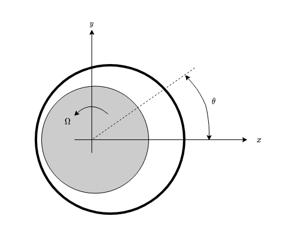
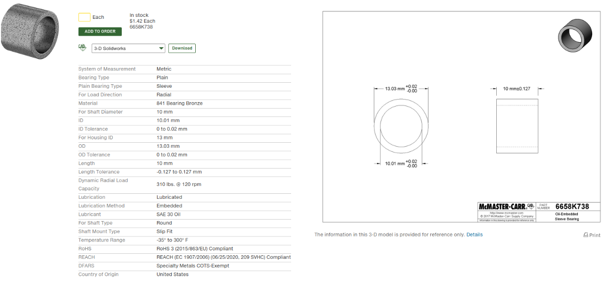

Assignment 1. Computation of journal bearing
Assignment 1. Computation of journal bearing#
It is possible to use the Reynolds equation to compute de eccentricity and the angle of a journal bearing with fluid film lubrication, given the load \(W\)

Consider that the journal is displaced in the \(x\) negative direction, so that \(h(\theta) = h_0(1+\varepsilon \cos(\theta))\) where \(\varepsilon=\frac{e}{h_0}\) is the relative eccentricity and \(h_0 = \frac{1}{2}(D_b -D_a)\) is the average gap thickness. The journal is rotating in the positive direction of \(\theta\) (polar coordinates)

Calculate the pressure distribution \(p(\theta)\) and the value and direction of \(\mathbf{W}\), in the approximation \(\varepsilon \ll 1\).
What happens to the journal if \(\mathbf{W}\) increase a little bit?
Apply the results to this real example, and discuss the value of the maximum load given by the manufactures at this rotational velocity. 